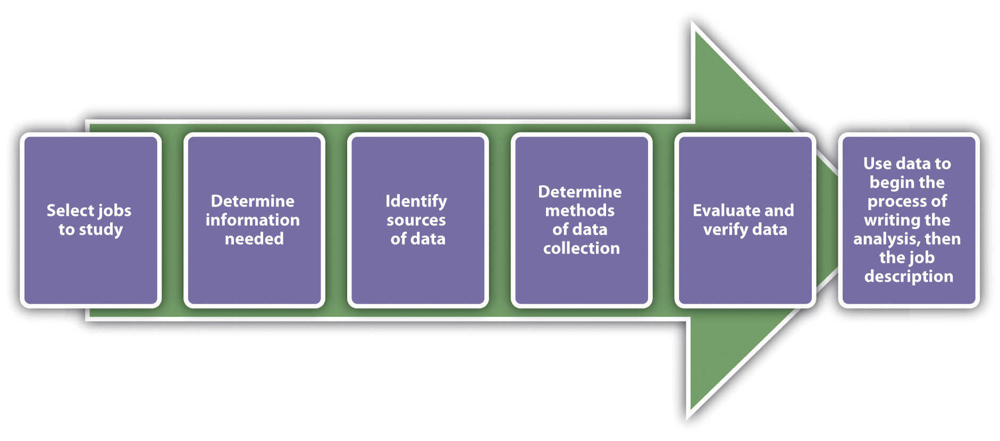
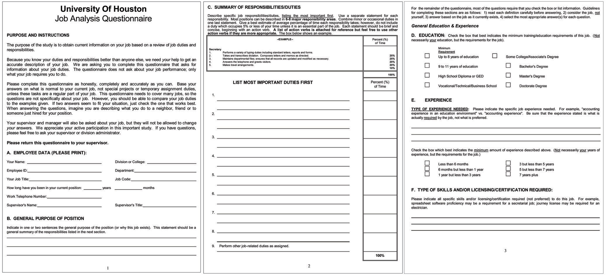
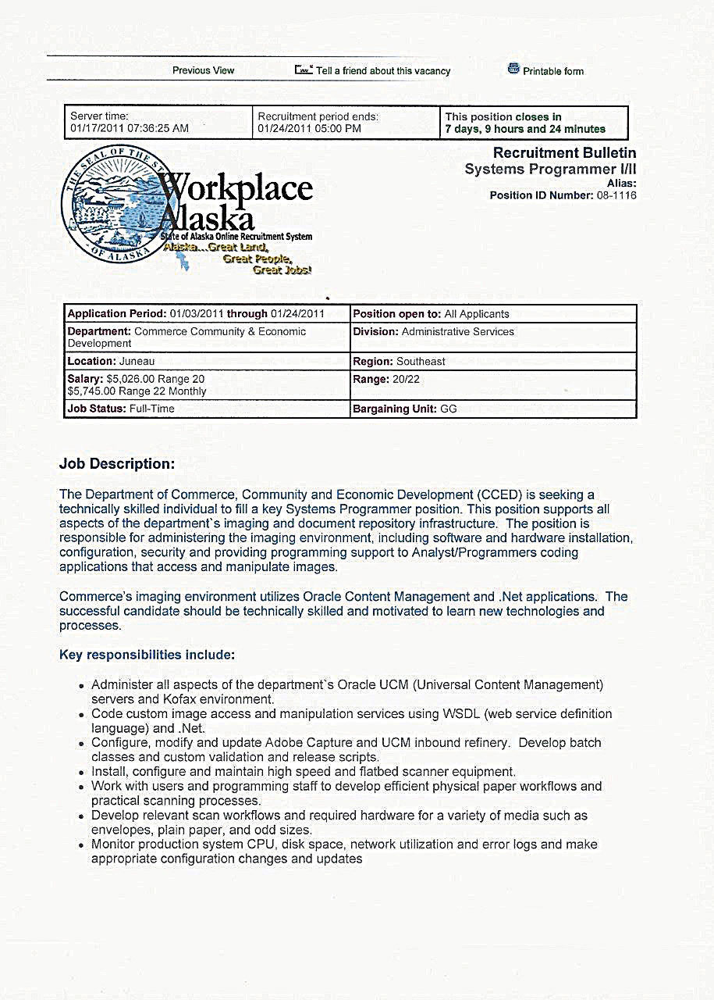
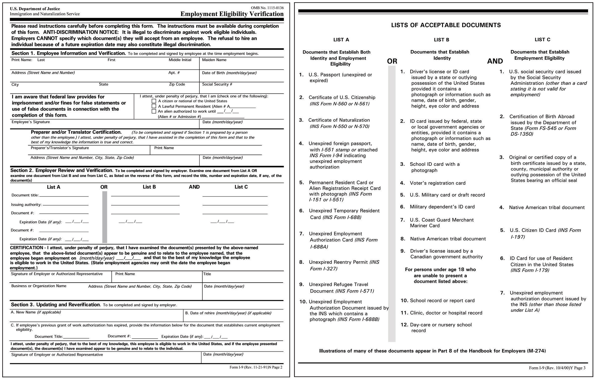
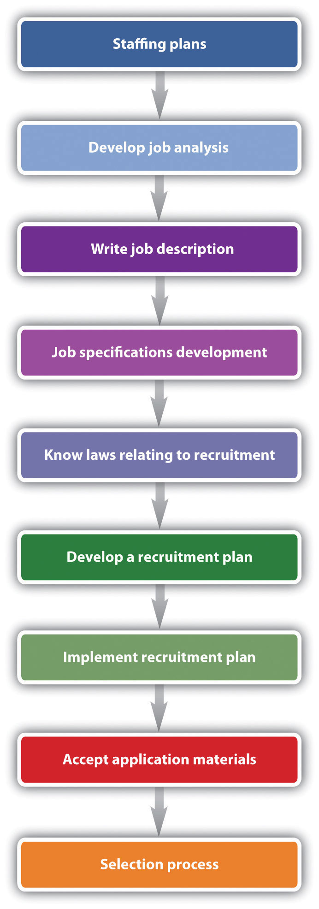

Over the last two years, the company where Melinda works as HR manager, Dragon Enterprises, has seen plenty of growth. Much of this growth has created a need for a strategic, specific recruiting processes. In the past, Dragon Enterprises recruited simply on the basis of the applications they received, rather than actively searching for the right person for the job. The first thing Melinda did when arriving at the company was to develop a job analysis questionnaire, which she had all employees fill out using the website SurveyMonkey. The goal was to create a job analysis for each position that existed at the company. This happened to be the point where the organization started seeing rapid growth, as a result of increased demand for the types of parts the company sells. Luckily, since Melinda followed the industry closely and worked closely with management, part of her strategic outline planned for the hiring of several new positions, so she was mostly ready for it. Keeping in mind the Equal Employment Opportunity Commission (EEOC) laws and the company’s position on a diverse workforce, Melinda set out to write new job descriptions for the job analysis she had performed. She knew the job analysis should be tied to the job description, and both of these should be tied to the job qualifications. Obviously, to recruit for these positions, she needed to develop a recruitment plan. Over the next year, the organization needed to hire three more floor management positions, three office positions, and fifteen factory floor positions. Next, she needed to determine a time line to recruit candidates and a method by which to accept the applications she would receive. After sharing this time line with her colleague, the chief operating officer, she went to work recruiting. She sent an e-mail to all employees asking them to refer a friend and receive a $500 bonus. Next, part of her strategy was to try to find very specialized talent in management to fill those positions. For this, she thought working with a recruiting company might be the best way to go. She also used her Twitter and Facebook accounts to broadcast the job openings. After a three-week period, Melinda had 54 applications for the management positions, 78 for the office positions, and 110 for the factory floor positions. Pleased with the way recruiting had gone, she started reviewing the résumés to continue with the selection process.
The author introduces the chapter on recruitment strategies.
The recruitment process is an important part of human resource management (HRM). It isn’t done without proper strategic planning. RecruitmentA process that provides the organization with a pool of qualified job candidates from which to choose. is defined as a process that provides the organization with a pool of qualified job candidates from which to choose. Before companies recruit, they must implement proper staffing plans and forecasting to determine how many people they will need. The basis of the forecast will be the annual budget of the organization and the short- to long-term plans of the organization—for example, the possibility of expansion. In addition to this, the organizational life cycle will be a factor. Organization life cycle is discussed in Chapter 2 "Developing and Implementing Strategic HRM Plans". Forecasting is based on both internal and external factors. Internal factors include the following:
External factors might include the following:
Once the forecasting data are gathered and analyzed, the HR professional can see where gaps exist and then begin to recruit individuals with the right skills, education, and backgrounds. This section will discuss this step in HR planning.
Although it might seem easy, recruitment of the right talent, at the right place and at the right time, takes skill and practice, but more importantly, it takes strategic planning. In Chapter 2 "Developing and Implementing Strategic HRM Plans", development of staffing plans is discussed. An understanding of the labor market and the factors determining the relevant aspects of the labor market is key to being strategic about your recruiting processes.
Based on this information, when a job opening occurs, the HRM professional should be ready to fill that position. Here are the aspects of developing a recruitment strategy:
The first step in the recruitment process is acknowledgment of a job opening. At this time, the manager and/or the HRM look at the job description for the job opening (assuming it isn’t a new job). We discuss how to write a job analysis and job description in Section 4.1.2 "Job Analysis and Job Descriptions".
Assuming the job analysis and job description are ready, an organization may decide to look at internal candidates’ qualifications first. Internal candidatesSomeone who applies for a position within the company who is already working for the company. are people who are already working for the company. If an internal candidate meets the qualifications, this person might be encouraged to apply for the job, and the job opening may not be published. Many organizations have formal job posting procedures and bidding systemsA system or a process in which job advertisements may be posted internally through a predetermined method so all employees have access to them. in place for internal candidates. For example, job postings may be sent to a listserv or other avenue so all employees have access to them. However, the advantage of publishing open positions to everyone in and outside the company is to ensure the organization is diverse. Diversity is discussed in Chapter 3 "Diversity and Multiculturalism". We discuss more about internal and external candidates and bidding systems in Chapter 5 "Selection".
Then the best recruiting strategies for the type of position are determined. For example, for a high-level executive position, it may be decided to hire an outside head-hunting firm. For an entry-level position, advertising on social networking websites might be the best strategy. Most organizations will use a variety of methods to obtain the best results. We discuss specific strategies in Section 4.3 "Recruitment Strategies".
Another consideration is how the recruiting process will be managed under constraining circumstances such as a short deadline or a low number of applications. In addition, establishing a protocol for how applications and résumés will be processed will save time later. For example, some HRM professionals may use software such as Microsoft Excel to communicate the time line of the hiring process to key managers.
Once these tasks are accomplished, the hope is that you will have a diverse group of people to interview (called the selection process). Before this is done, though, it is important to have information to ensure the right people are recruited. This is where the job analysis and job description come in. We discuss this in Section 4.1.2 "Job Analysis and Job Descriptions".
The job analysisA formal system developed to determine the tasks people actually perform in their jobs. is a formal system developed to determine what tasks people actually perform in their jobs. The purpose of a job analysis is to ensure creation of the right fit between the job and the employee and to determine how employee performance will be assessed. A major part of the job analysis includes research, which may mean reviewing job responsibilities of current employees, researching job descriptions for similar jobs with competitors, and analyzing any new responsibilities that need to be accomplished by the person with the position. According to research by Hackman and Oldham,J. Richard Hackman and Greg R. Oldham, “Motivation through the Design of Work: Test of a Theory,” Organizational Behavior and Human Performance 16, no. 2 (August 1976): 250–79. a job diagnostic survey should be used to diagnose job characteristics prior to any redesign of a job. This is discussed in Chapter 7 "Retention and Motivation".
To start writing a job analysis, data need to be gathered and analyzed, keeping in mind Hackman and Oldham’s model. Figure 4.1 "Process for Writing the Job Analysis" shows the process of writing a job analysis. Please note, though, that a job analysis is different from a job design. Job designRefers to how a job can be modified or changed to be more effective—for example, changing tasks as new technology becomes available. refers to how a job can be modified or changed to be more effective—for example, changing tasks as new technology becomes available. We discuss job design in Chapter 7 "Retention and Motivation" and Chapter 11 "Employee Assessment".
Figure 4.1 Process for Writing the Job Analysis
The information gathered from the job analysis is used to develop both the job description and the job specifications. A job descriptionA list of tasks, duties, and responsibilities of a job. is a list of tasks, duties, and responsibilities of a job. Job specificationsThe skills and abilities the person must have to perform the job., on the other hand, discuss the skills and abilities the person must have to perform the job. The two are tied together, as job descriptions are usually written to include job specifications. A job analysis must be performed first, and then based on that data, we can successfully write the job description and job specifications. Think of the analysis as “everything an employee is required and expected to do.”
Figure 4.2 Sample Job Analysis Questionnaire
This questionnaire shows how an HR professional might gather data for a job analysis. Questionnaires can be completed on paper or online.
Two types of job analyses can be performed: a task-based analysis and a competency- or skills-based analysis. A task-based analysis focuses on the duties of the job, as opposed to a competency-based analysis, which focuses on the specific knowledge and abilities an employee must have to perform the job. An example of a task-based analysis might include information on the following:
With task job analysis, the specific tasks are listed and it is clear. With competency based, it is less clear and more objective. However, competency-based analysis might be more appropriate for specific, high-level positions. For example, a competency-based analysis might include the following:
You can clearly see the difference between the two. The focus of task-based analyses is the job duties required, while the focus of competency-based analyses is on how a person can apply their skills to perform the job. One is not better than the other but is simply used for different purposes and different types of jobs. For example, a task-based analysis might be used for a receptionist, while a competency-based analysis might be used for a vice president of sales position. Consider the legal implications, however, of which job analysis is used. Because a competency-based job analysis is more subjective, it might be more difficult to tell whether someone has met the criteria.
Once you have decided if a competency-based or task-based analysis is more appropriate for the job, you can prepare to write the job analysis. Of course, this isn’t something that should be done alone. Feedback from managers should be taken into consideration to make this task useful in all levels of the organization. Organization is a key component to preparing for your job analysis. For example, will you perform an analysis on all jobs in the organization or just focus on one department? Once you have determined how you will conduct the analysis, a tool to conduct the analysis should be chosen. Most organizations use questionnaires (online or hard copy) to determine the duties of each job title. Some organizations will use face-to-face interviews to perform this task, depending on time constraints and the size of the organization. A job analysis questionnaire usually includes the following types of questions, obviously depending on the type of industry:
Once all employees (or the ones you have identified) have completed the questionnaire, you can organize the data, which is helpful in creating job descriptions. If there is more than one person completing a questionnaire for one job title, the data should be combined to create one job analysis for one job title. There are a number of software packages available to help human resources perform this task, such as AutoGOJA.
Once the job analysis has been completed, it is time to write the job description and specifications, using the data you collected. Job descriptions should always include the following components:
Figure 4.3 Sample Job Description
Notice how the job description includes the job function; knowledge, skills, and abilities required to do the job; education and experience required; and the physical requirements of the job.
Once the job description has been written, obtaining approval from the hiring manager is the next step. Then the HR professional can begin to recruit for the position. Before we discuss specific recruitment strategies, we should address the law and how it relates to hiring. This is the topic of Section 4.2 "The Law and Recruitment".
Be sure to include the pertinent information:
A short video on how to write an effective job description, with examples.
Does your current job or past job have a job description? Did it closely match the tasks you actually performed?
Do an Internet search for “job description.” Review three different job descriptions and then answer the following questions for each of the jobs:
One of the most important parts of HRM is to know and apply the law in all activities the HR department handles. Specifically with hiring processes, the law is very clear on a fair hiring that is inclusive to all individuals applying for a job. The laws discussed here are applied specifically to the recruiting of new employees.
The Immigration Reform and Control Act (IRCA)A law adopted by Congress in 1986 that requires employers to attest to their employees’ immigration status. was adopted by Congress in 1986.U.S. Citizenship and Immigration Services website. Accessed January 17, 2011. http://www.uscis.gov/portal/site/uscis/menuitem.5af9bb95919f35e66f614176543f6d1a/?vgnextchannel=b328194d3e88d010VgnVCM10000048f3d6a1RCRD&vgnextoid =04a295c4f635f010VgnVCM1000000ecd190aRCRD. This law requires employers to attest to their employees’ immigration status. It also makes it illegal to hire or recruit illegal immigrants. The purpose of this law is to preserve jobs for those who have legal documentation to work in the United States. The implications for human resources lie in the recruitment process, because before entering employees into the selection process (interviewing, for example), it is important to know they are eligible to work in the United States. This is why many application forms ask, “Are you legally able to work in the United States?” Dealing with the IRCA is a balancing act, however, because organizations cannot discriminate against legal aliens seeking work in the United States.
The IRCA relates not only to workers you hire but also to subcontractors. In a subcontractor situation (e.g., your organization hires an outside firm to clean the building after hours), your organization can still be held liable if it is determined your organization exercises control over how and when the subcontractors perform their jobs. In 2005, undocumented janitorial workers sued Walmart, arguing that the contracting company they worked for didn’t pay them a minimum wage.Zavala v. Wal-Mart, No. 03-5309, DC NJ (2005). Because the retailer controlled many of the details of their work, Walmart was considered to be a coemployer, and as a result, Walmart was held responsible not only for back wages but for the fact their subcontractor had hired undocumented workers.
HR professionals must verify both the identity and employment eligibility of all employees, even if they are temporary employees. The INS I-9 form (Employment Eligibility Verification form) is the reporting form that determines the identity and legal work status of a worker.
If an audit is performed on your company, you would be required to show I-9 forms for all your workers. If an employer hires temporary workers, it is important to manage data on when work visas are to expire, to ensure compliance. Organizations that hire illegal workers can be penalized $100 to $1,000 per hire. There is a software solution for management of this process, such as HR Data Manager. Once all data about workers are inputted, the manager is sent reminders if work authorization visas are about to expire. Employers are required to have the employee fill out the I-9 form on their first day of work, and the second section must be filled out within three days after the first day of employment. The documentation must be kept on file three years after the date of hire or for one year after termination. Some states, though, require the I-9 form be kept on file for as long as the person is employed with the organization.
In 2010, new rules about the electronic storage of forms were developed. The US Department of Homeland Security said that employees can have these forms electronically signed and stored.
Figure 4.4
The I-9 form must be completed by management within three days of hire and be kept for at least three years, but in some states, it must be kept on file for the duration of employment.
In response to the September 11, 2001, terrorist attacks against the United States, the Patriot ActSigned in response to the September 11, 2001, attacks, the Patriot Act introduced legislative changes to enhance the federal government’s ability to conduct domestic and international investigations and surveillance activities. was signed, introducing legislative changes to enhance the federal government’s ability to conduct domestic and international investigations and surveillance activities. As a result, employers needed to implement new procedures to maintain employee privacy rights while also creating a system that allowed for release of information requested by the government.
The act also amended the Electronic Communications Privacy Act, allowing the federal government easier access to electronic communications. For example, only a search warrant is required for the government to access voice mail and e-mail messages.
The act also amended the Foreign Intelligence Surveillance Act. The government is allowed to view communications if an employee is suspected of terrorism, and the government does not have to reveal this surveillance to the employer.
It is prudent for HR professionals and managers to let potential employees know of these new requirements, before the hiring process begins.
Wrong Job Description
Aimee, a highly motivated salesperson, has come to you with a complaint. She states that she had her performance evaluation, but all the items on her evaluation didn’t relate to her actual job. In the past two years, she explains, her job has changed because of the increase of new business development using technology. How would you handle this?
How Would You Handle This?
https://api.wistia.com/v1/medias/1371475/embedThe author discusses the How Would You Handle This situation in this chapter at: https://api.wistia.com/v1/medias/1371475/embed.
We discuss Equal Employment Opportunity (EEO) laws in Chapter 3. They are worth mentioning again here in relation to the recruitment process. The Equal Employment Opportunity Commission (EEOC) is a federal agency charged with the task of enforcing federal employment discrimination laws. While there are restrictions on the type of company covered (companies with at least fifteen employees), the EEOC requires collection of data and investigates discrimination claims, again, for organizations with more than fifteen employees.
Under EEO law related to the recruitment process, employers cannot discriminate based on age (forty years or older), disability, genetic information, national origin, sex, pregnancy, race, and religion. In a job announcement, organizations usually have an EEO statement. Here are some examples:
In addition to including the EEO policy in the job announcement, HR is required to post notices of EEOC policies in a visible part of the work environment (such as the break room).
Although the EEOC laws in hiring are clear about discrimination, an exception may occur, called the bona fide occupational qualification (BFOQ)A quality or attribute employers are allowed to consider when making decisions during the selection process.. BFOQ is a quality or attribute that is reasonably necessary to the normal operation of the business and that can be used when considering applicants. To obtain a BFOQ exception, a company must prove that a particular person could not perform the job duties because of sex, age, religion, disability, and national origin. Examples of BFOQ exceptions might include the following:
However, many arguments for BFOQ would not be considered valid. For example, race has never been a BFOQ, nor has customers’ having a preference for a particular gender. Generally speaking, when going through the recruitment process and writing job descriptions, assuming a BFOQ would apply might be a mistake. Seeking legal council before writing a job description would be prudent.
Other aspects to consider in the development of the job description are disparate impact and disparate treatment. These are the two ways to classify employment discrimination cases. Disparate impactWhen an organization discriminates through the use of a process, affecting a protected group as a whole, rather than consciously intending to discriminate. occurs when an organization discriminates through the use of a process, affecting a protected group as a whole, rather than consciously intending to discriminate. Some examples of disparate impact might include the following:
Disparate treatmentWhen one person is intentionally treated differently than another, not necessarily impacting the larger protected group as a whole, as in disparate impact., when one person is intentionally treated differently than another, does not necessarily impact the larger protected group as a whole, as in disparate impact. The challenge in these cases is to determine if someone was treated differently because of their race or gender or if there was another reason for the different treatment. Here are two examples:
Can you think of other examples of disparate impact that might affect a certain protected group of people under EEOC?
An attorney from Berkent Legal Services explains the concept of disparate impact.
Now that we have discussed development of the job analysis, job description, and job specifications, and you are aware of the laws relating to recruitment, it is time to start recruiting. It is important to mention, though, that a recruitment plan should be in place. This plan can be informal, but you should outline where you plan to recruit and your expected time lines. For example, if one of your methods is to submit an ad to a trade publication website, you should know their deadlines. Also of consideration is to ensure you are recruiting from a variety of sources to ensure diversity. Lastly, consider the economic situation of the country. With high unemployment, you may receive hundreds of applications for one job. In an up economy, you may not receive many applications and should consider using a variety of sources.
Some companies, such as Southwest Airlines, are known for their innovative recruitment methods. Southwest looks for “the right kind of people” and are less focused on the skills than on the personality of the individual.W. P. Carey, “Employees First: Strategy for Success,” Knowledge @ W. P. Carey, W. P. Carey School of Business, Arizona State University, June 26, 2008, accessed July 11, 2011, http://knowledge.wpcarey.asu.edu/article.cfm?articleid=1620. When Southwest recruits, it looks for positive team players that match the underdog, quirky company culture. Applicants are observed in group interviews, and those who exhibit encouragement for their fellow applicants are usually those who continue with the recruitment process. This section will discuss some of the ways Southwest and many other Fortune 500 companies find this kind of talent.
Zappos has developed and posted a series of YouTube videos called “Why Do I Like Working at Zappos?” The videos show the culture of the organization and provide a great tool for recruitment.
Some organizations choose to have specific individuals working for them who focus solely on the recruiting function of HR. Recruiters use similar sources to recruit individuals, such as professional organizations, websites, and other methods discussed in this chapter. Recruiters are excellent at networking and usually attend many events where possible candidates will be present. Recruiters keep a constant pipeline of possible candidates in case a position should arise that would be a good match. There are three main types of recruiters:
A contingent recruiter is paid only when the recruiter starts working, which is often the case with temporary recruitment or staffing firms. A retained recruiter gets paid up front (in full or a portion of the fee) to perform a specific search for a company.
While the HR professional, when using recruiters, may not be responsible for the details of managing the search process, he or she is still responsible for managing the process and the recruiters. The job analysis, job description, and job specifications still need to be developed and candidates will still need to be interviewed.
In 2009, when Amazon purchased Zappos for 10 million shares of Amazon stock (roughly $900 million in 2009), the strategic move for Amazon didn’t change the hiring and recruiting culture of Zappos. Zappos, again voted one of the best one hundred companies to work for by CNN MoneyCheryl Sowa, “Going Above and Beyond,” America’s Best, September/October 2008, accessed July 11, 2011, http://www.americasbestcompanies.com/magazine/articles/going-above-and-beyond.aspx. believes it all starts with the people they hire. The recruiting staff always asks, “On a scale of 1–10, how weird do you think you are?” This question ties directly to the company’s strategic plan and core value number three, which is “create fun and a little weirdness.” Zappos recruits people who not only have the technical abilities for the job but also are a good culture fit for the organization. Once hired, new employees go through two weeks of training. At the end of the training, newly hired employees are given “the offer.” The offer is $2,000 to quit on the spot. This ensures Zappos has committed people who have the desire to work with the organization, which all begins with the recruiting process.
Colleges and universities can be excellent sources of new candidates, usually at entry-level positions. Consider technical colleges that teach cooking, automotive technology, or cosmetology. These can be great sources of people with specialized training in a specific area. Universities can provide people that may lack actual experience but have formal training in a specific field. Many organizations use their campus recruiting programs to develop new talent, who will eventually develop into managers.
For this type of program to work, it requires the establishment of relationships with campus communities, such as campus career services departments. It can also require time to attend campus events, such as job fairs. IBM, for example, has an excellent campus recruiting program. For IBM, recruiting out of college ensures a large number of people to grow with the organization.“University Students,” IBM, n.d., accessed January 17, 2011, http://www-03.ibm.com/employment/start_university.html.
Setting up a formal internship program might also be a way to utilize college and university contacts. Walgreens, for example, partners with Apollo College to recruit interns; this can result in full-time employment for the motivated intern and money saved for Walgreens by having a constant flow of talent.
Professional associations are usually nonprofit organizations whose goal is to further a particular profession. Almost every profession has its own professional organization. For example, in the field of human resources, the Society for Human Resource Management allows companies to post jobs relating to HR. The American Marketing Association, also a professional organization, allows job postings as well. Usually, there is a fee involved, and membership in this association may be required to post jobs. Here are some examples of professional associations:
Labor unions can also be excellent sources of candidates, and some unions also allow job postings on their website. We will discuss unions further in Chapter 12 "Working with Labor Unions". The key to using this as a successful recruitment strategy is to identify the organizations that relate to your business and to develop relationships with members in these organizations. This type of networking can help introduce you to people in your industry who may be looking for a job or know of someone who needs a job.
What do you think is the best way to determine the right set of recruitment methods for your organization? What methods would be best for your current job?
Figure 4.5 Overview of the Steps to the Recruitment Process
If you have ever had to look for a job, you know there are numerous websites to help you do that. From the HR perspective, there are many options to place an ad, most of which are inexpensive. The downside to this method is the immense number of résumés you may receive from these websites, all of which may or may not be qualified. Many organizations, to combat this, implement software that searches for keywords in résumés, which can help combat this problem. We discuss more about this in Chapter 5 "Selection". Some examples of websites might include the following:
Facebook, Twitter, LinkedIn, YouTube, and MySpace are excellent places to obtain a media presence to attract a variety of workers. In 2007, Sodexo, which provides services such as food service and facilities management, started using social media to help spread the word about their company culture. Since then, they have saved $300,000 on traditional recruiting methods.Sodexo, “Sodexo Earns SNCR Excellent Award for Innovative Use of Social Media,” news release, December 2, 2009, accessed January 17, 2011, http://www.sodexousa.com/usen/newsroom/press/press09/sncrexcellenceaward.asp. Sodexo’s fifty recruiters share updates on Twitter about their excellent company culture. Use of this media has driven traffic to the careers page on Sodexo’s website, from 52,000 to 181,000.
The goal of using social media as a recruiting tool is to create a buzz about your organization, share stories of successful employees, and tout an interesting culture. Even smaller companies can utilize this technology by posting job openings as their status updates. This technique is relatively inexpensive, but there are some things to consider. For example, tweeting about a job opening might spark interest in some candidates, but the trick is to show your personality as an employer early on. According to Bruce Morton of Allegis Group Services, using social media is about getting engaged and having conversations with people before they’re even thinking about you as an employer.Anna Lindow, “How to Use Social Media for Recruiting,” Mashable, June 11, 2011, accessed July 12, 2011, http://mashable.com/2011/06/11/social-media-recruiting. Debbie Fisher, an HR manager for a large advertising agency, Campbell Mithun, says that while tweeting may be a good way to recruit people who can be open about their job hunt, using tools such as LinkedIn might be a better way to obtain more seasoned candidates who cannot be open about their search for a new job, because of their current employment situation. She says that LinkedIn has given people permission to put their résumé online without fear of retribution from current employers.
Creativity with a social media campaign also counts. Campbell Mithun hired thirteen interns over the summer using a unique twist on social media. They asked interested candidates to submit thirteen tweets over thirteen days and chose the interns based on their creativity.
Many organizations, including Zappos (Video 4.4), use YouTube videos to promote the company. Within the videos is a link that directs viewers to the company’s website to apply for a position in the company.
Facebook allows free job postings in Facebook Marketplace, and the company Facebook page can also be used as a recruiting tool. Some organizations decide to use Facebook ads, which are paid on a “per click” or per impression (how many people potentially see the ad) basis. Facebook ad technology allows specific regions and Facebook keywords to be targeted.Tiffany Black, “How to Use Social Media as a Recruiting Tool,” Inc., April 22, 2010, accessed July 12, 2011, http://www.inc.com/guides/2010/04/social-media-recruiting.html. Some individuals even use their personal Facebook page to post status updates listing job opportunities and asking people to respond privately if they are interested.
Many organizations, such as Microsoft, hold events annually to allow people to network and learn about new technologies. Microsoft’s Professional Developer Conference (PDC), usually held in July, hosts thousands of web developers and other professionals looking to update their skills and meet new people.
Some organizations, such as Choice Career Fairs, host job fairs all over the country; participating in this type of job fair may be an excellent way to meet a large variety of candidates. Other events may not be specifically for recruiting, but attending these events may allow you to meet people who could possibly fill a position or future position. For example, in the world of fashion, Fashion Group International (FGI) hosts events internationally on a weekly basis, which may allow the opportunity to meet qualified candidates.
Special/specific interest groups (SIGs), which may require membership of individuals, focus on specific topics for members. Often SIGs will have areas for job posting, or a variety of discussion boards where jobs can be posted. For example, the Women in Project Management SIG provides news on project management and also has a place for job advertisements. Other examples of SIGs might include the following:
Recruiting using SIGs can be a great way to target a specific group of people who are trained in a specific area or who have a certain specialty.
Most recruiting plans include asking current employees, “Who do you know?” The quality of referred applicants is usually high, since most people would not recommend someone they thought incapable of doing the job. E-mailing a job opening to current employees and offering incentives to refer a friend can be a quick way of recruiting individuals. Due to the success of most formalized referral programs, it is suggested that a program be part of the overall HRM strategic plan and recruitment strategy. However, be wary of using referrals as the only method for recruitment, as this can lead to lack of diversity in a workplace. NepotismA preference for hiring relatives of current employees. means a preference for hiring relatives of current employees, which can also lead to lack of diversity and management issues in the workplace.
For example, the University of Washington offers $1,200 any time a current employee successfully refers a friend to work at their medical centers. Usually, most incentives require the new employee to be hired and stay a specified period of time. Some examples of incentives that can be used to refer a friend might include the following:
These types of programs are called employee referral programs (ERPs)A type of recruitment strategy that involves a planned program to access current employee referrals. and tend to generate one of the highest returns on investment per hire.Dave Lefkow, “Improving Your Employee Referral Program and Justifying Your Investment,” ERE.net, February 21, 2002, accessed July 12, 2011, http://www.ere.net/2002/02/21/improving-your-employee-referral-program-and-justifying-your-investment. To make an ERP program effective, some key components should be put into place:
Accenture recently won the ERE Media Award for one of the most innovative ERPs. Its program has increased new hires from referrals from 14 percent to 32 percent, and employee awareness of the program jumped from just 20 percent to 99 percent.John Sullivan, “Amazing Practices in Recruiting—ERE Award Winners 2009,” pt. 1, ERE.net, April 13, 2009, accessed July 12, 2011, http://www.ere.net/2009/04/13/amazing-practices-in-recruiting-ere-award-winners-2009-part-1-of-2. The uniqueness of their program lies with the reward the employee receives. Instead of offering personal financial compensation, Accenture makes a donation to the charity of the employee’s choice, such as a local elementary school. Their program also seeks to decrease casual referrals, so the employee is asked to fill out an online form to explain the skills of the individual they are referring. The company has also developed a website where current employees can go to track the progress of referrals. In addition, employee referral applications are flagged online and fast-tracked through the process—in fact, every referral is acted upon. As you can see, Accenture has made their ERP a success through the use of strategic planning in the recruitment process.
Table 4.1 Advantages and Disadvantages of Recruiting Methods
| Recruitment Method | Advantages | Disadvantages |
|---|---|---|
| Outside recruiters, executive search firms, and temporary employment agencies | Can be time saving | Expensive |
| Less control over final candidates to be interviewed | ||
| Campus recruiting/educational institutions | Can hire people to grow with the organization | Time consuming |
| Plentiful source of talent | Only appropriate for certain types of experience levels | |
| Professional organizations and associations | Industry specific | May be a fee to place an ad |
| Networking | May be time-consuming to network | |
| Websites/Internet recruiting | Diversity friendly | Could be too broad |
| Low cost | Be prepared to deal with hundreds of résumés | |
| Quick | ||
| Social media | Inexpensive | Time consuming |
| Overwhelming response | ||
| Events | Access to specific target markets of candidates | Can be expensive |
| May not be the right target market | ||
| SIG | Industry specific | Research required for specific SIGS tied to jobs |
| Referrals | Higher quality people | Concern for lack of diversity |
| Retention | Nepotism | |
| Unsolicited résumés and applications | Inexpensive, especially with time-saving keyword résumé search software | Time consuming |
| Internet and/or traditional advertisements | Can target a specific audience | Can be expensive |
| Employee leasing | For smaller organizations, it means someone does not have to administer compensation and benefits, as this is handled by leasing company | Possible costs |
| Can be a good alternative to temporary employment if the job is permanent | Less control of who interviews for the position | |
| Public employment agencies | The potential ability to recruit a more diverse workforce | May receive many résumés, which can be time-consuming |
| No cost, since it’s a government agency | ||
| 2,300 points of service nationwide | ||
| Labor unions | Access to specialized skills | May not apply to some jobs or industries |
| Builds relationship with the union |
Part of recruitment planning includes budgeting the cost of finding applicants. For example, let’s say you have three positions you need to fill, with one being a temporary hire. You have determined your advertising costs will be $400, and your temporary agency costs will be approximately $700 for the month. You expect at least one of the two positions will be recruited as a referral, so you will pay a referral bonus of $500. Here is how you can calculate the cost of recruitment for the month:
cost per hire = advertising costs + recruiter costs + referral costs + social media costs + event costs.$400 + $700 + $500 = $1600/3 = $533 recruitment cost per hire.
In addition, when we look at how effective our recruiting methods are, we can look at a figure called the yield ratio. A yield ratioThe percentage of applicants from one source who make it to the next stage in the selection process. is the percentage of applicants from one source who make it to the next stage in the selection process (e.g., they get an interview). For example, if you received two hundred résumés from a professional organization ad you placed, and fifty-two of those make it to the interview state, this means a 26 percent yield (52/200). By using these calculations, we can determine the best place to recruit for a particular position. Note, too, that some yield ratios may vary for particular jobs, and a higher yield ratio must also consider the cost of that method, too. For an entry-level job, campus recruiting may yield a better ratio than, say, a corporate recruiter, but the corporate recruiter may have higher cost per hires.
After we have finished the recruiting process, we can begin the selection process. This is the focus of Chapter 5 "Selection".
Chapter Summary
The author provides a video summary of the chapter.
Recruitment Statistics
As the assistant to the human resources director at Tally Group, you normally answer phones and set appointments for the director. You are interested in developing skills in HRM, and one day, your HR director presents you with a great opportunity for you to show what you can do. She asks you to analyze last year’s recruitment data to determine which methods have worked best. As you look at the data, you aren’t sure how to start, but you remember something on this from your HRM class in college. After reviewing the data in your book, you feel confident to analyze these numbers. Please go ahead and perform calculations on these numbers, then provide answers to the questions that follow.
Table 4.2 Tally Group Recruiting Numbers, 2012
| Method | Total Number Recruited | Yearly Cost ($) |
|---|---|---|
| Temporary placement firms | 8 | 3,200 |
| Campus recruiting | 2 | 1,500 |
| Professional association ads | 10 | 4,500 |
| Social media/company website | 33 | 300 |
| Job fair | 3 | 500 |
| Referrals | 26 | 26,000 |